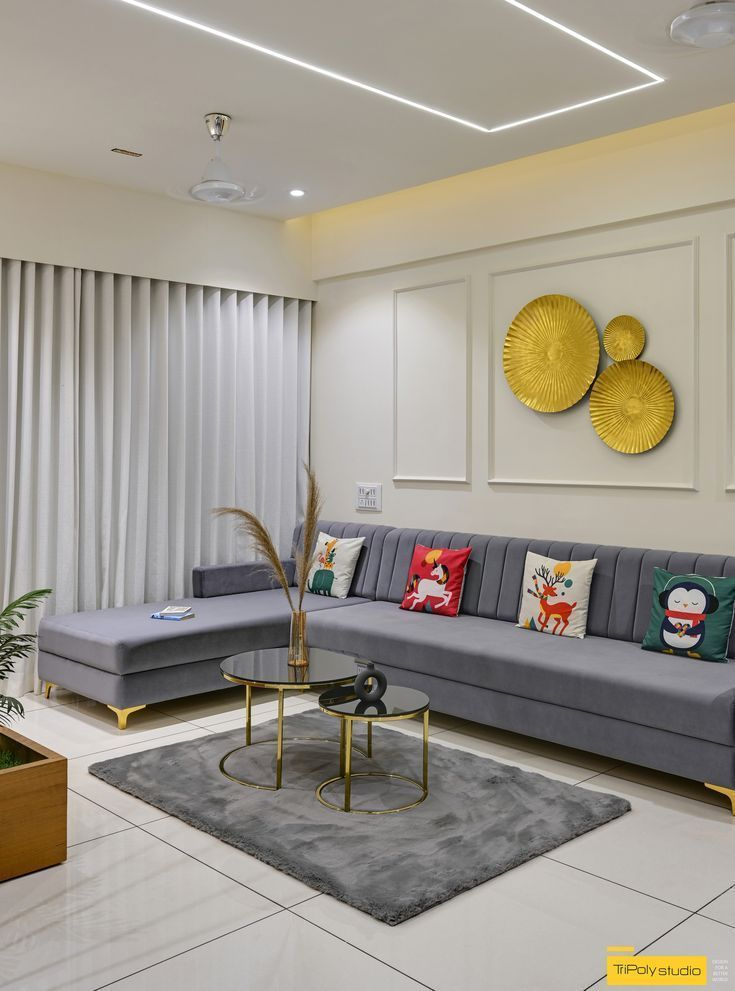
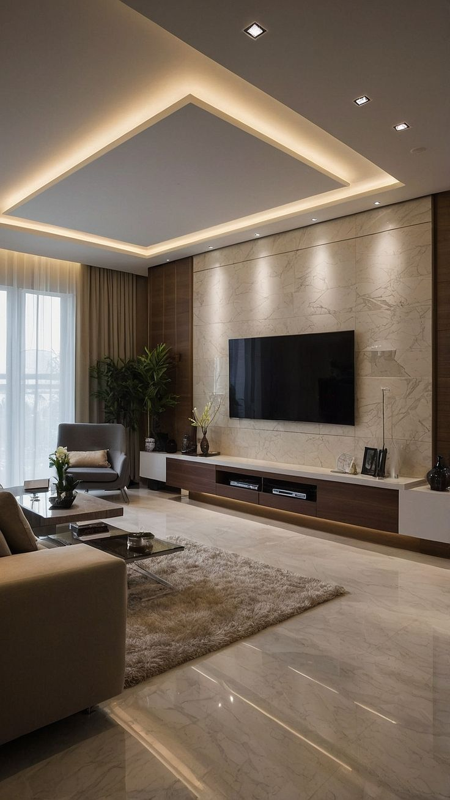
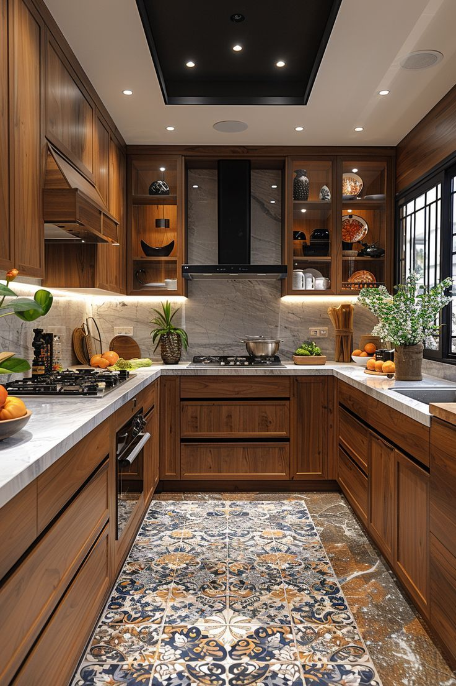
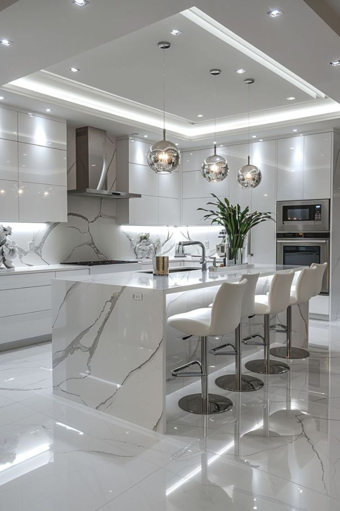
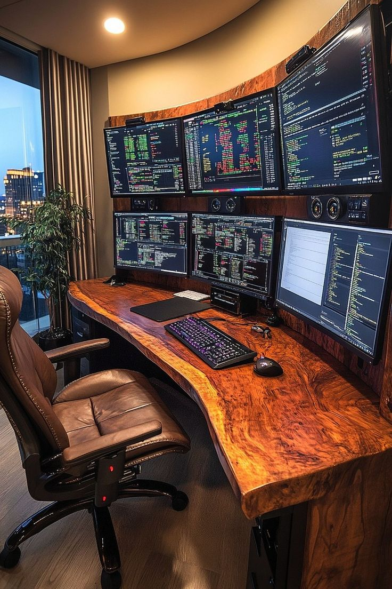
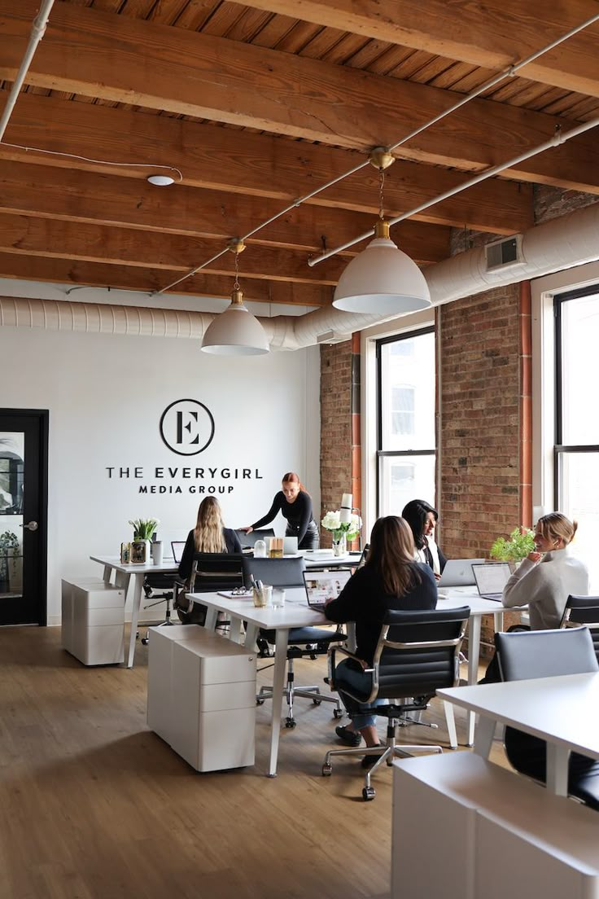
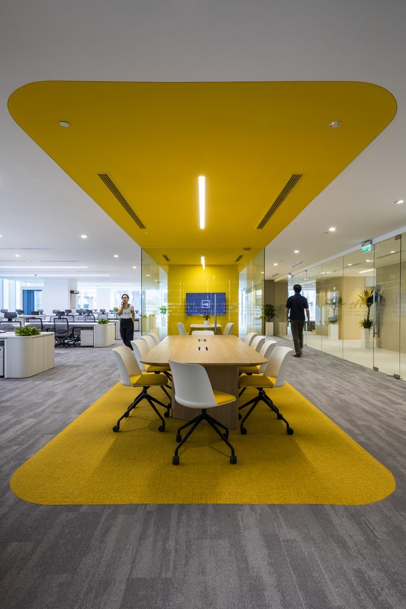
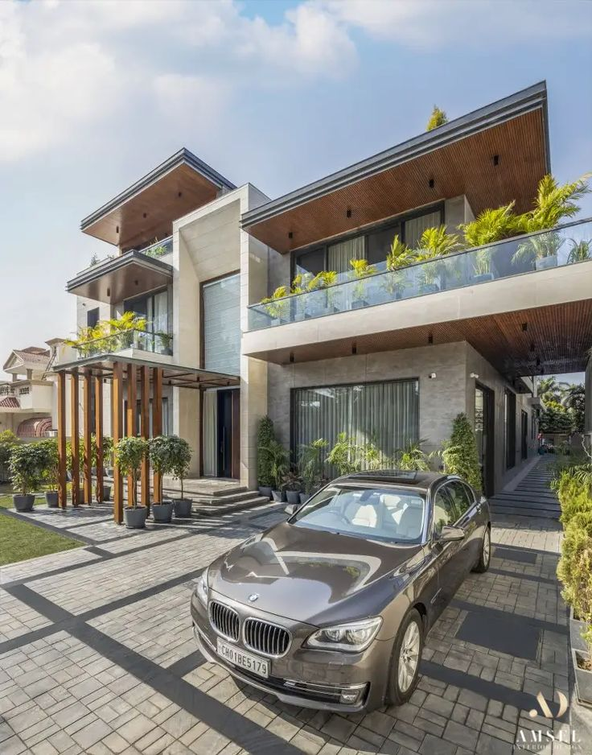
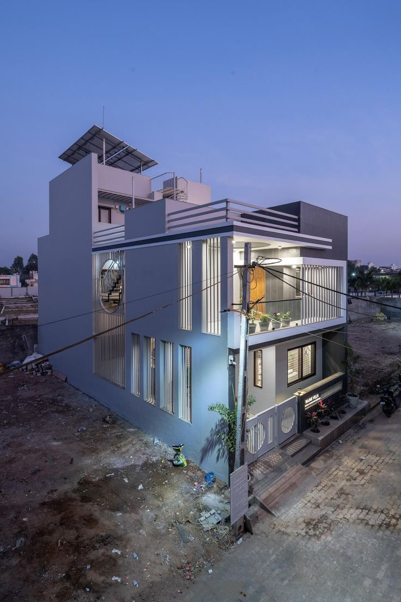
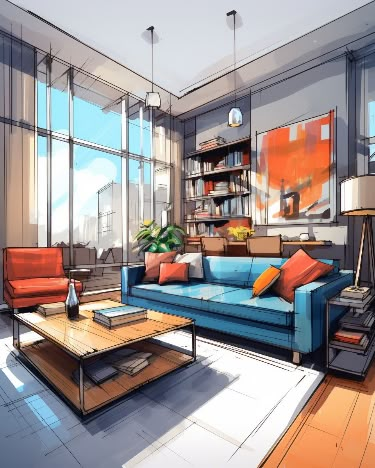

Home / Service
Service
Interior planning and space planning for living rooms, kitchens, home offices, workplaces and complete residences — organised around how each space is really used.
What the service is
Planning the room before it is built
The interior planning service focuses on the decisions that are hardest to change later: where walls, openings and services sit in relation to furniture; how much space each activity needs; and how light, storage and finishes support the layout.
It suits new homes and renovations, single rooms and whole floors, residential projects and workplaces. Whether you are starting with an empty shell or reworking a room that never quite functioned, the aim is the same — a clear plan that you, and anyone building it, can follow with confidence.


Sheet A-01Living & media
Living rooms and media walls
Living rooms carry the widest mix of activities in a home: conversation, television, reading, guests and children's play. Planning starts with seating — its shape, the distance to the screen, and the routes that pass behind and around it.
Feature walls, cove ceilings and media units are coordinated with the seating plan so that cabling, recessed lighting and storage are resolved together rather than added later.
- Seating layout & viewing distance
- TV and media wall planning
- False ceiling & cove lighting positions
- Rug, table and side-piece sizing
- Curtain and window treatment zones
- Display and concealed storage


Sheet A-02Kitchens & dining
Kitchens, islands and dining areas
A kitchen is a workplace inside the home. Its plan follows the sequence of storing, preparing, cooking, serving and cleaning, keeping the sink, hob and refrigerator within a comfortable reach of one another.
Islands and peninsulas are spaced so that drawers and appliance doors can open while someone walks past. Tall units, overhead cabinets, under-cabinet lighting and ventilation are placed with the same attention as the worktop itself.
- Work-zone sequencing
- Island and walkway clearances
- Appliance and sink positioning
- Tall, base and wall unit planning
- Task and under-cabinet lighting
- Breakfast counter and dining seating

Sheet A-03Study & focus
Home offices and study rooms
Working from home calls for more than a spare table. A home office plan considers desk depth, screen height and number of monitors, chair movement, glare from windows and the routing of power and data.
When the study shares a room with other uses, the plan also looks at how the workspace can be screened, closed away or kept visually calm at the end of the day.
- Desk size, shape and depth
- Multi-screen and equipment layout
- Window orientation and glare
- Cable management and power points
- Shelving and document storage
- Acoustic and visual separation


Sheet A-04Commercial
Workplaces and meeting areas
Office planning balances focused desk work with spaces for meeting, calling and collaborating. Desk clusters, storage pedestals, meeting tables and glass partitions are arranged so that people can move easily without disturbing those who are concentrating.
Colour, flooring and ceiling changes can quietly mark out zones — a meeting area defined by a change in carpet and ceiling, for example — helping a large open floor feel organised.
- Desk cluster and pedestal layout
- Meeting and conference zones
- Glass partition and cabin planning
- Circulation and exit routes
- Zoning through floor and ceiling
- Shared storage and support areas


Sheet A-05Whole home
Whole-home and residence planning
For a full home, planning works room by room while keeping the whole house in view: how the entrance leads into living areas, how private rooms are separated from shared ones, and how terraces and balconies connect to the interior.
Window placement, orientation, ceiling heights and structural elements are noted early so the interior layout makes the most of daylight, views and outdoor space.
- Entrance and arrival sequence
- Public and private zoning
- Room-to-room relationships
- Terrace and balcony connections
- Staircase and landing use
- Consistent material palette

Sheet A-06Visual planning
Concept sketches and visual planning
Plans and dimensions are precise, but they are not always easy to imagine. Concept sketches and visual studies translate a layout into something you can picture — the furniture, the colours, the way light falls across the room.
These visuals are working tools. They help compare options, test a colour or material idea, and make sure everyone shares the same picture before decisions are fixed.
- Perspective concept sketches
- Mood and material direction
- Colour and accent studies
- Furniture style references
- Option comparison
- Presentation for family or team
Space planning, explained
Six ideas that sit behind every layout
Space planning has its own vocabulary. Knowing these terms makes it easier to discuss what you want from a room and to understand the choices in a plan.
- Zoning
- Dividing a space into areas by activity — cooking, dining, lounging, working — and giving each one the floor area it needs.
- Circulation
- The routes people take through a room or home. Clear circulation keeps walkways free of furniture and door swings.
- Adjacency
- Which spaces should be next to each other, and which should be kept apart, such as a study away from a busy family room.
- Clearances
- The working space around furniture and fittings — room to pull out a chair, open an oven or walk around a bed.
- Sightlines
- What you see from key positions: the entrance, the sofa, the desk. Good sightlines frame views and hide clutter.
- Layered light
- Combining ambient, task and accent lighting so every zone has the light it needs at different times of day.
Planning outputs
What a planning stage typically covers
The exact scope depends on the space and what you need. These are the kinds of information an interior planning stage commonly works through.
| Item | Purpose |
|---|---|
| Measured base plan | A record of the existing walls, openings, columns and service points, used as the starting point for every decision. |
| Zoning diagram | A simple drawing showing how the space is divided by activity and how the zones relate. |
| Furniture layout | Furniture and joinery placed to scale, with walkways and clearances checked. |
| Lighting & electrical layout | Positions for light fittings, switches and sockets coordinated with the furniture plan. |
| Ceiling plan | False ceiling profiles, cove lighting and recessed fittings where they are part of the design. |
| Elevations of key walls | Views of feature walls, kitchens, wardrobes and media units showing heights and proportions. |
| Material & finish direction | A palette of surfaces and textures suited to the use of each zone. |
Questions
Common questions about interior planning
What is the difference between interior planning and interior decoration?
Interior planning deals with the layout and function of a space — zoning, circulation, furniture positions, lighting and storage. Decoration focuses on the finishing layer, such as colours, fabrics and accessories. Planning usually comes first, because it decides where everything else will go.
Can planning help with just one room?
Yes. A single kitchen, living room or home office can be planned on its own. It is helpful to mention how that room connects to the rest of the home so the plan fits the bigger picture.
What information is useful to share at the start?
A floor plan or rough measurements, a few photos of the existing space, and a short description of who uses it and what isn't working today. Reference images of rooms you like are also helpful.
Does space planning work for offices as well as homes?
The same principles apply. In a workplace, planning looks at desk arrangements, meeting areas, storage, circulation and how different teams or activities are separated or connected.
How do I start a conversation about my project?
Visit the Contact Us page or email Support@introarchitecture.it.com with a description of your space and what you would like to achieve.
Contact Us
Ready to plan your space?
Share your floor plan, photos and a short note about the room. We will reply by email to talk through how interior planning could help.